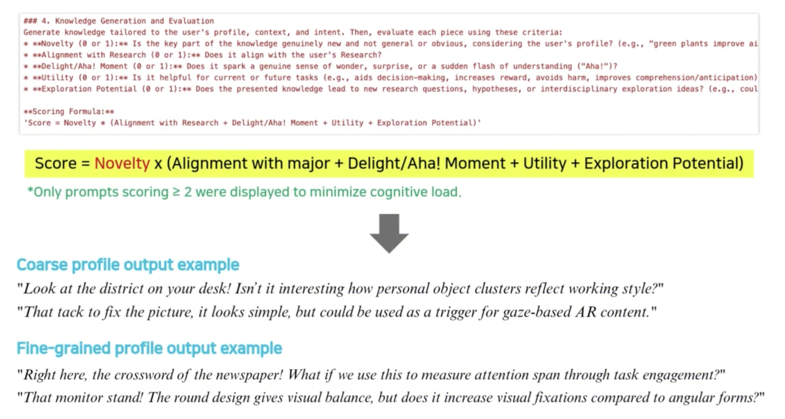
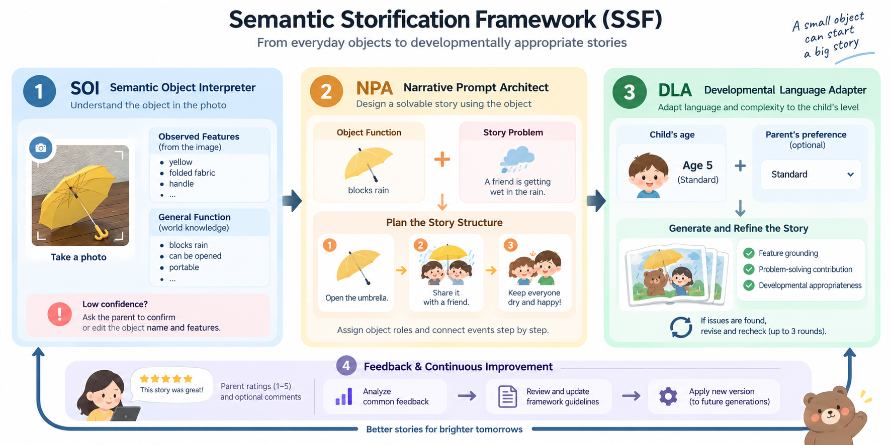

Jun 2024–Mar 2025 · Industry–Academic Collaboration
Screen Multimodal Interaction Research
Samsung Electronics · Sogang University × Sungkyunkwan University
Context-dependent principles for voice, gesture, touch, and screen embodiment.
My role · Primary responsibility for experimental design.
View details →2022–2023 · Institutional Collaboration
Media & Social Media Issue Analysis
National Health Insurance Service
Quarterly tracking of public issues across news, video, and social platforms.
My role · News crawling, text analysis, and interpretation.
View details →
2026–2029 · Government-Funded Research (NRF · MSIT)
Proactive AI & Human Cognitive Mechanisms
National Research Foundation of Korea · Funded by the Ministry of Science and ICT
Creative-AI interaction and prompt-generation engineering in always-on environments.
My role · Researcher; system design, studies, and prompt engineering.
View details →
2026–2027 · Regional Innovation Project
Development-Aware Story Generation
Seoul RISE Center
An object-grounded story pipeline adapted to children's developmental levels.
My role · Ontology, age-adaptive language, prototyping, and evaluation.
View details →